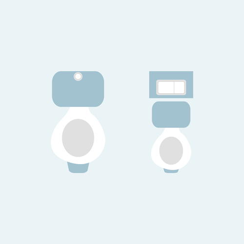

Soru 4
Eski tip sifonlar ile her kullanımda 15 litre ila 25 litre su harcarken, çift kademeli sifonlar ile maksimum 4-5 litre su harcayarak 10 ila 20 litre su tasarrufu sağlarsınız.
Evimdeki sifon ikili sistemdir. / Evimdeki sifon ikili sistem değil ama sifonun su hacmini düşürmek için haznenin içerisine su dolu bir şişe yerleştirdim.
